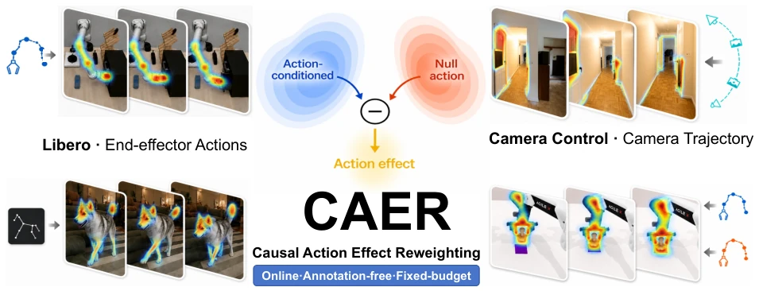
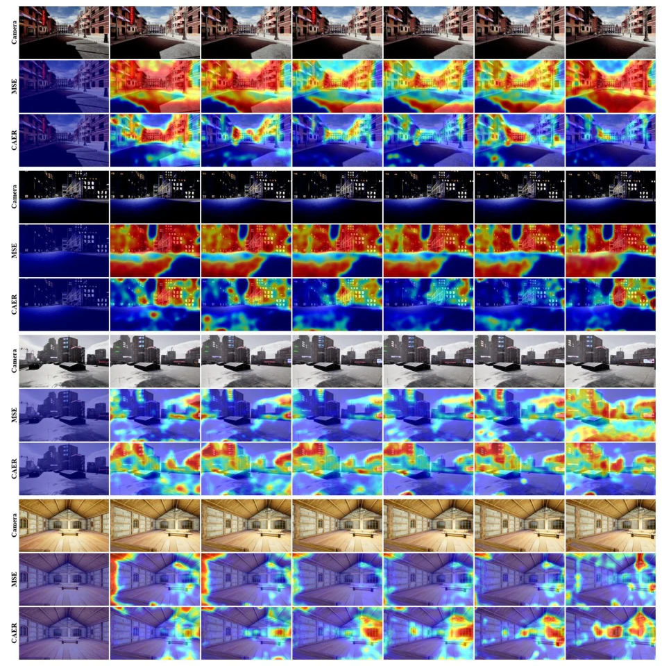
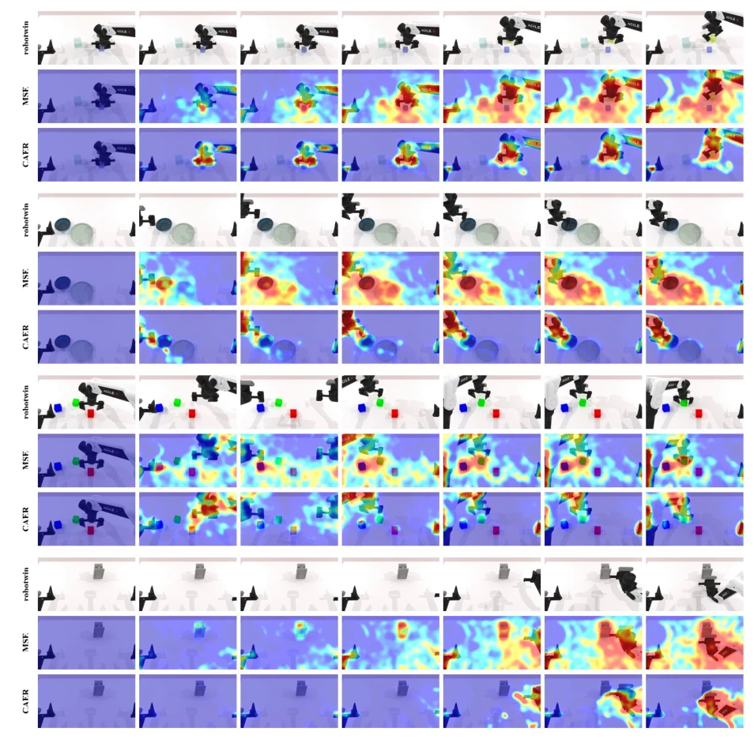
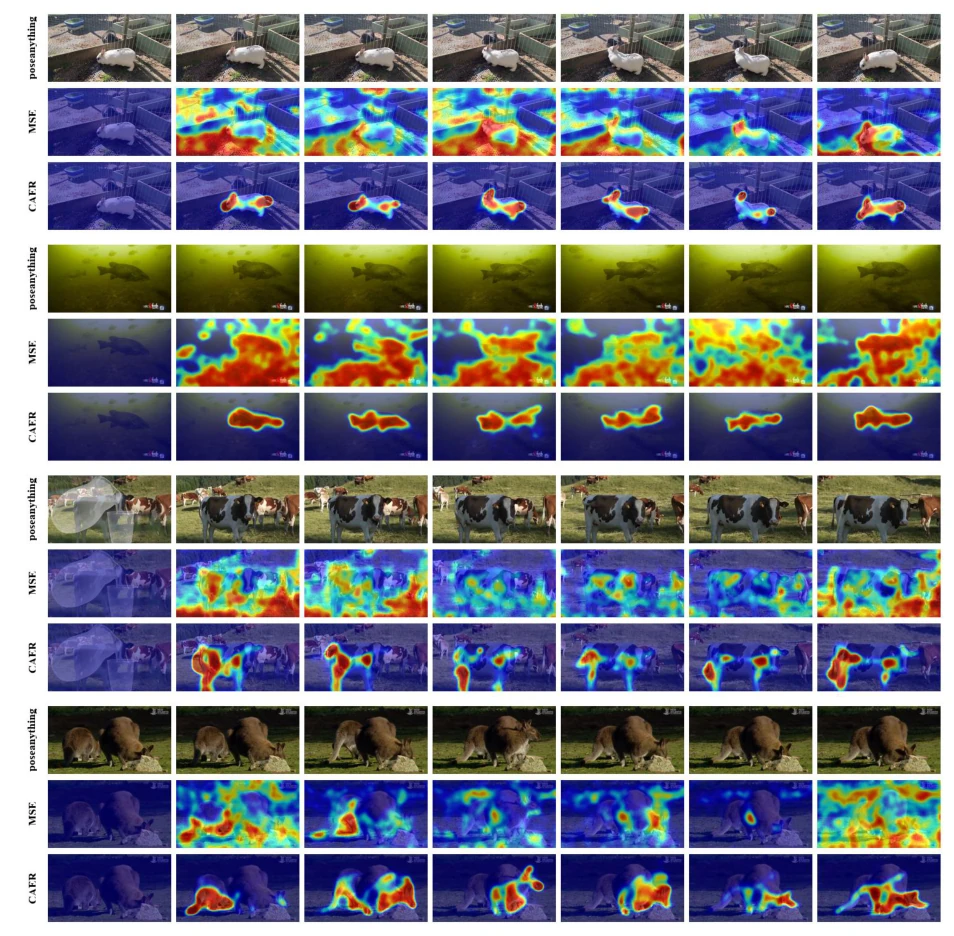
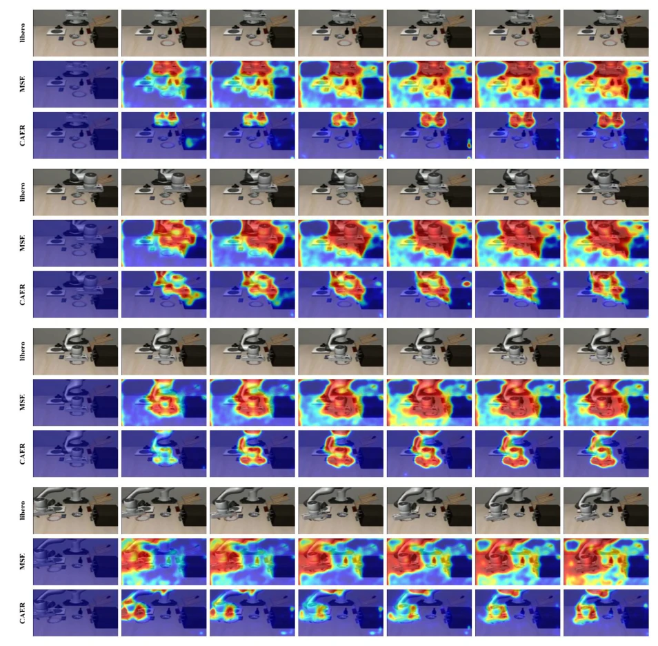

世界模型最近火得不行，但大多数训练出来的模型就像个只会画背景的“壁纸生成器”，动作一干预，物理规律全崩。CAER 这招挺聪明，直接给梯度分配搞了个“精准打击”。它不靠外部标注，而是让模型自己对比“有动作”和“没动作”的区别，把损失权重砸在真正受动作影响的地方。这就像老师改作业，不再平均打分，而是盯着错题本重点辅导。虽然本质还是改 Loss，但省去了 SAM 或光流这些昂贵的预处理，在线就能跑。不过，这种“自举”信号会不会在训练初期误导模型？实验显示它确实能收敛得更好，但具体泛化到长程规划还有得看，毕竟只是重加权，没改架构。
—
研究动机Motivation
现有世界模型（如 Wan [1], Cosmos [3]）普遍采用时空均匀的 MSE 损失。问题在于，视频里大部分 token 是静态背景，梯度容易被这些“水”样本淹没，导致稀疏的物理交互（如物体碰撞、机械臂运动）学不好。虽然有人尝试用 SAM [10] 或 RAFT [11] 做外部分割或光流来加权，但这不仅计算开销大，还引入了外部模型的偏差，且无法捕捉动作与未来的因果联系。CAER 想解决的核心问题是：如何在不依赖昂贵外部标注的前提下，让模型自动识别并强化那些真正由动作因果驱动的预测区域，从而提升具身智能的交互可控性。
—

Figure 1: CAER overview. CAER identifies and reweights action-responsive tokens online without external annotations. Examples span end-effector trajectories, camera trajectories, dual-arm actions, and pose maps.
Figure 2: CAER framework overview. At a fixed intermediate noise level and under shared noise, CAER contrasts the model’s response under the real action and a learned null action to localize action-sensitive tokens, then normalizes the map sample-wise to unit mean. The objective redistributes a fixed coefficient mass toward causally responsive regions, while action dropout keeps every token stochastically supervised.
Figure 3: Qualitative Results. Generated videos and their CAER loss-supervision maps across four distinct action-conditioning modalities. Darker red regions indicate larger loss values, whereas darker purple regions indicate smaller loss values.

Figure 5: Camera-control qualitative comparison. Representative camera-control examples and their supervision maps under uniform MSE and CAER. Compared with the spatially broader responses of uniform MSE, CAER places more emphasis on regions associated with camera-induced motion and scene changes while suppressing already modeled background content.

Figure 6: RoboTwin arm-manipulation qualitative comparison. Representative RoboTwin manipulation examples and the corresponding supervision maps under uniform MSE and CAER. CAER more consistently concentrates responses around the robot end-effector, manipulated objects, and interaction or contact regions, while uniform MSE assigns substantial responses to broader scene regions.

Figure 7: PoseAnything qualitative comparison. Representative pose-conditioned generation examples and their supervision maps under uniform MSE and CAER. The CAER maps are more focused on articulated subjects and pose-bearing regions, whereas uniform MSE exhibits more diffuse responses over the surrounding visual content.

Figure 8: LIBERO manipulation qualitative comparison. Representative LIBERO robot-manipulation examples and the corresponding supervision maps. CAER emphasizes the robot, manipulated object, and relevant workspace involved in the action, while uniform MSE spreads supervision more broadly across the scene.